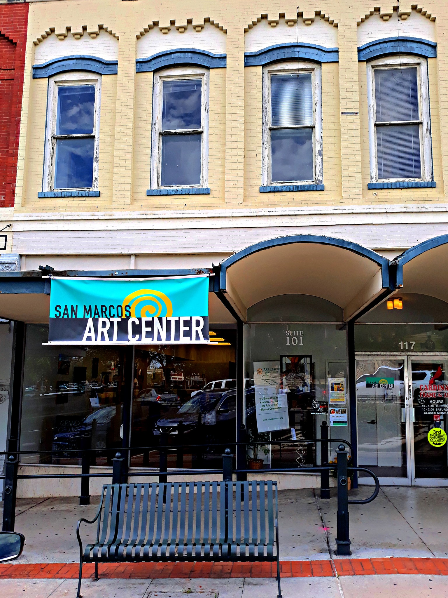

117 N Guadalupe St Ste. 101, San Marcos, TX 78666 (512) 679-5059 Open W-Sun from 11 a.m-5 p.m.
Have you been dying to see showcases of local art in San Marcos? Are you perhaps interested in seeing the talent San Marcos artists have to offer? The San Marcos Art Center is an art gallery located downtown. These creative sculptures and art pieces created by local artists are not warranted for a specific audience. Every individual is welcome to explore the eccentricities to be showcased at the art center.
The San Marcos Art Center journeyed to create collectives of art that indulged the community of art lovers within San Marcos. Most importantly, they want to showcase as many talented artists as they can in order to help support and promote them. The success of local artists is a success for the art center. The fine art they showcase ranges from clay to stained glass, as they circulate the featured pieces and artists. This accommodates the arts community in San Marcos who return to see different showcases of talent.
The gallery is not only for those who like to admire art, but the art center provides a space for local artists can meet and collaborate with one another. Even if you are just beginning to better your artistic talents, artistic demonstrations and workshops are taught to the community as well. This art center is for any individual in San Marcos who has an interest in art. No expectations here, just self-expression. Fine art is articulated and specifically chosen for the community of San Marcos, so there may just be a piece that speaks to you.
Image by San Marcos Art Center